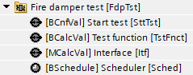
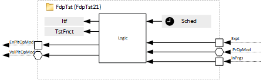
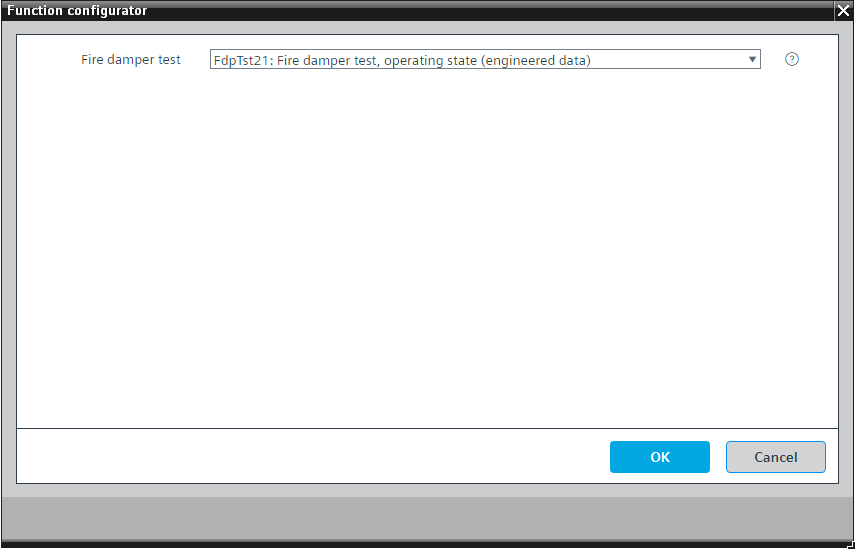

[FdpTst21] 防火阀测试，运行状态
Program block, name / node subtype: [FdpTst21] Fire damper test, operating state
Library hierarchy: Ventilation and air conditioning functions
Family: FdpTst
项目树 | 图表 |
|---|---|
|
 |  |
Configurator


程序块存储在没有 I/Os. 的库中 使用auto-create and auto-connect函数创建 I/Os 和 /or 将它们连接到接口块，例如 R_A、CMD_B。或者，从包含库中预定义 I/Os 的文件夹中取出 I/Os，并从工厂中取出 /or，并将它们连接到接口块。
姓名 | 描述 | 类型 | 报警/通知类 | 趋势/类型 | |
|---|---|---|---|---|---|
|
SttTst | Start test | BCnfVal: Binary configuration value | N/A | No | |
TstFnct | Test function | BCalcVal: Binary calculated value | No | No | |
Sched | Scheduler | BSchedule: Binary scheduler | N/A | No | |
Itf | Interface | MCalcVal: Multistate calculated value | No | 是的，4 | |
逻辑开始了。首先，测试停止设备并等待，直到 In Progress 引脚的值返回到 false。其次，它向防火阀组发送打开命令，并等待一段时间，该时间必须设置得比防火阀的打开时间长。然后，它发送关闭命令并再次等待一段时间，该时间必须设置得比防火阀的关闭时间长。
该程序块需要一个防火阀组（FdpGrp21orFdpGrp22）作为合作伙伴，因为防火阀组配备了一个可选逻辑来读取多状态计算值（MCalcVal）元素接口（Itf）从程序块执行测试并记录测试结果。